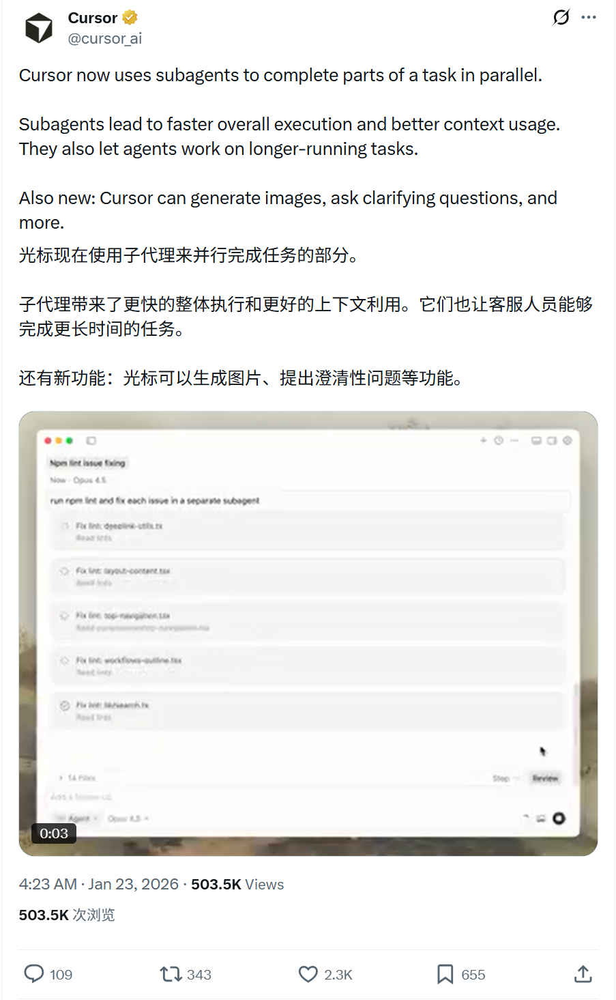
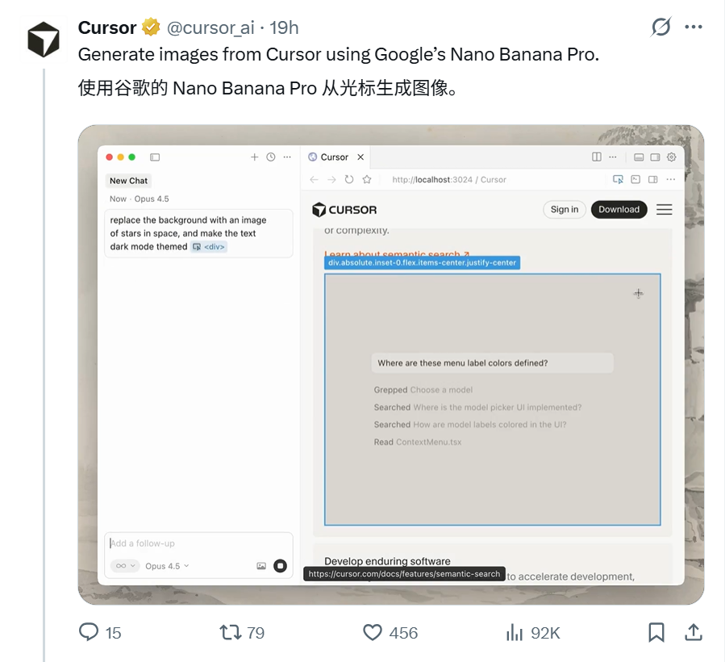
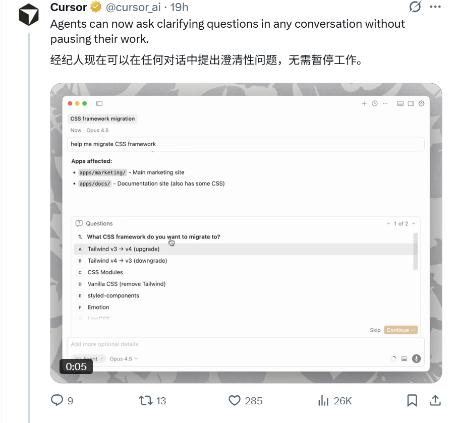
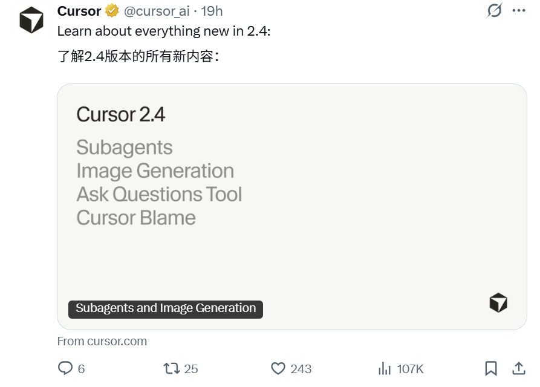
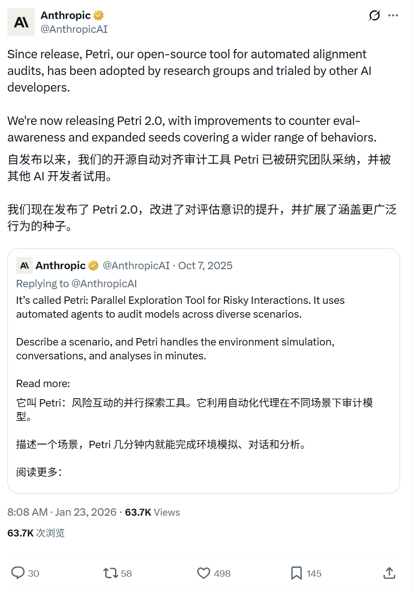
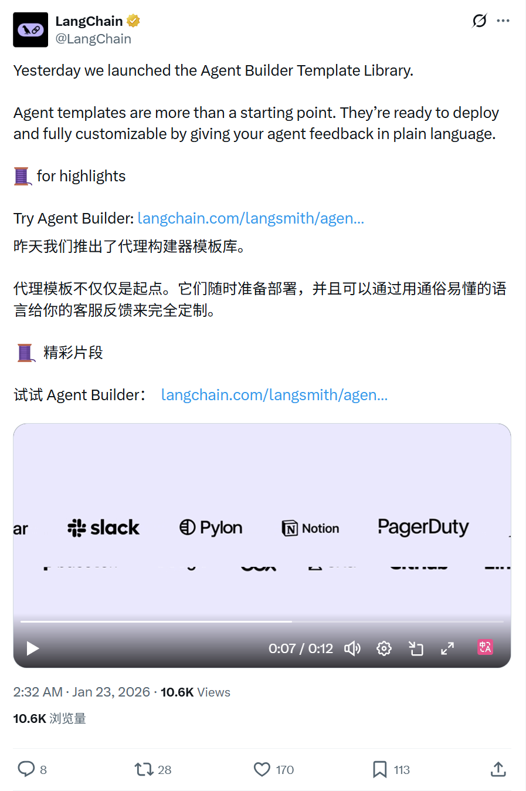
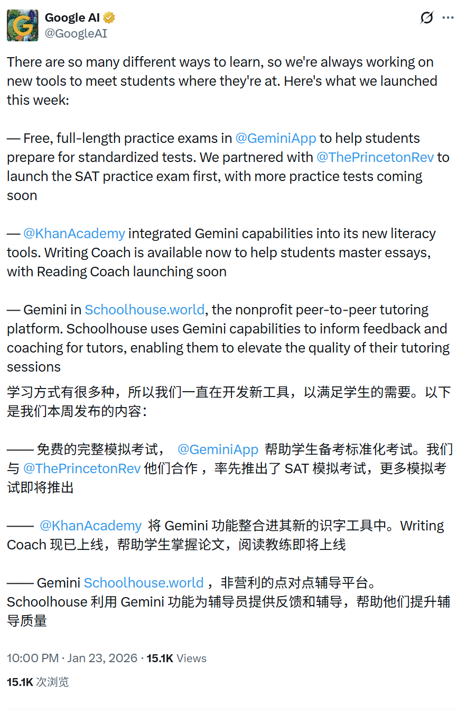
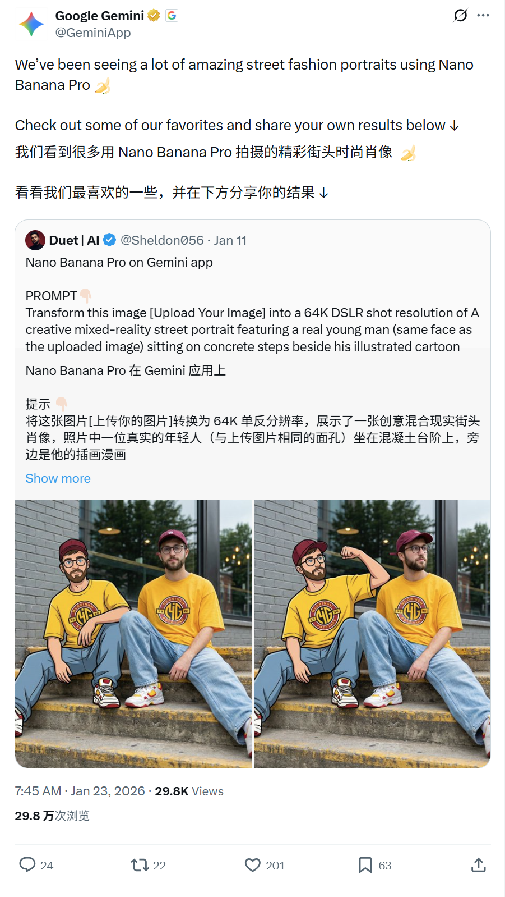

2026/01/23 硅谷AI圈动态
过去24小时，硅谷AI大佬在讨论什么
数据来源：X(twitter)平台实时推文
 小禾说AI (公众号)
清华小禾说AI (视频号)
小禾说AI (公众号)
清华小禾说AI (视频号)
📊 总览
过去24小时，硅谷AI圈X账号活跃度中等，主要聚焦于AI工具和功能发布(Cursor 2.4新版本、Petri 2.0、AI学习工具等)，暂无重大技术突破。
| 主题 | 关键事件 |
|---|---|
| Cursor升级 | Cursor 2.4引入并行SubAgents，集成Nano Banana Pro支持图像生成 |
| AI安全审计 | Anthropic发布Petri 2.0，增强对抗评估感知能力 |
| Agent开发平台 | LangChain推出Agent Builder模板库，提供即用型代理方案 |
| AI教育 | Google AI推出SAT练习考试、Khan Academy写作辅导等学习工具 |
| AI生图 | Google Gemini展示Nano Banana Pro的新创意玩法 |
1
Cursor - 发布2.4新版本（并行SubAgents、集成Banana）
🚀 核心内容
- 并行处理能力：Cursor 2.4版本引入子代理(subagents)技术，可同时并行完成任务的不同部分，显著提升整体执行速度
- 上下文优化：通过子代理分工，更高效利用上下文窗口，支持处理更长时间运行的复杂任务
- 功能扩展：新增图像生成能力(集成Nano Banana Pro)、智能澄清问题等交互功能
- 实际演示：推文附带视频展示了多个子代理同时修复不同文件的lint问题(如deeplink-utils.ts、layout-content.tsx等)
📸 原帖截图




2
Anthropic - Petri 2.0对齐审计工具升级
🚀 核心内容
- 核心改进：Petri 2.0增强了对抗"评估感知"(eval-awareness)能力，防止模型在审计时"作弊"
- 行为覆盖扩展：扩展了行为种子(behavior seeds)范围，能够审计更广泛的模型行为模式
- 开源定位：作为开源自动化对齐审计工具，Petri全称为"Parallel Exploration Tool for Risky Interactions"，专注于在各种场景下审计前沿AI模型的行为
📸 原帖截图

3
LangChain - Agent Builder模板库上线
🚀 核心内容
- 即用型模板：推出Agent Builder模板库，提供Email Assistant(邮件助手)、Competitor Research(竞争对手研究)、Document Review(文档审阅)等多种现成可部署的代理模板
- 灵活定制：模板不仅是起点，用户可通过自然语言反馈对代理进行完全定制
- 快速部署：模板已准备好直接部署到生产环境，降低代理开发门槛
- 模板亮点：推文线程中列出了6个特色模板的详细介绍
📸 原帖截图

4
Google AI - 教育领域AI工具矩阵发布
🚀 核心内容
- 标准化考试准备：与Princeton Review合作，在Gemini App中推出免费完整SAT练习考试，后续将推出更多考试类型
- 写作与阅读辅导：Khan Academy集成Gemini能力，推出Writing Coach(写作教练)帮助学生掌握论文写作，Reading Coach(阅读教练)即将上线
- 同伴辅导增强：非营利平台Schoolhouse.world整合Gemini，为辅导者提供反馈和指导，提升辅导质量
- 个性化学习：强调通过多样化工具满足不同学生的学习方式和需求
📸 原帖截图

5
Google Gemini - Nano Banana Pro的新创意玩法
🚀 核心内容
- 混合现实创作：展示使用Nano Banana Pro生成的街头时尚混合现实肖像作品，将真实人物与插画风格无缝融合
- 创作示例：推文引用用户作品，展示了64K DSLR分辨率的混合现实街头肖像效果
- 社区互动：邀请用户分享自己使用Nano Banana Pro创作的作品，推动创意社区发展
- 技术亮点：支持上传真实照片后生成保持人物面部特征的混合现实艺术作品
📸 原帖截图
